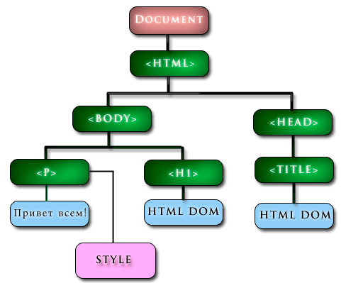
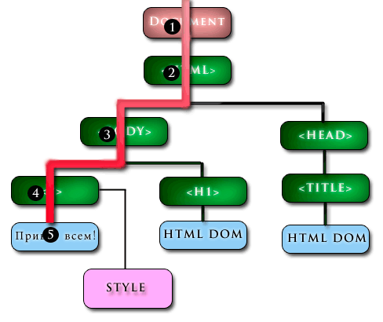
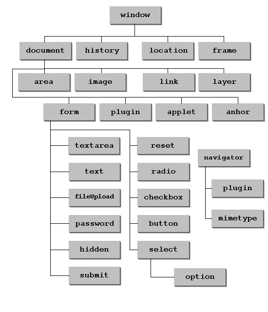

Об'єктна модель документа(англ. Document Object Model, DOM) — специфікація прикладного програмного інтерфейсу для роботи зі структурованими документами (як правило, документів XML). Визначається ця специфікація консорціумом W3C.
Історія розвитку DOM
- 1996 DOM level 0 давав змого обробляти тільки деякі події і мав доступ до таких обєктів як form link і зображення
- 1997 проміжний давав змогу змінювати CSS властивості вперше появилось поняття DHTML
- 1998 DOM level 1 був введений в стандарт консорціума W3V
- 2000 DOM level 2 введено метод getElementById модель подій і підтримку XML namespace
- 2004 DOM level 3 добавленно підтримку XPath і обропку подій клавіатури
Обєктна структура
При відкриті будь-якого HTML документа браузер завчасно проводить робір його вмісту і на основі цього розбору створює обєктну модель документа або DOM.DOM складається з вложених один в одного ієрархічно розміщених обєктів, які називаються вузлами.Кожен вузол в структурі представляє розміщений на сторінці HTML елемент. Використовуючи DOM ви можете взаємодіяти (считувати, змінювати, видаляти) елементи HTML документів з скриптів.Нижче розташовується код HTML документа і DOM, яка б була створена браузером на основі цього коду:
<html>
<head>
<title>HTML DOM</title>
</head>
<body>
<h1>HTML DOM.</h1>
<p style="color:green">Привет всем.</p>
</body>
</html>

Червоним кольором відзначений вузол документа. Будь-яке звернення до DOM має починатися з обігу до даного вузла. Зеленим кольором відмічені елементні вузли. Для кожного HTML елемента на сторінці браузер створює відповідний елементний вузол. Вміст елементів зберігається в текстових вузлах. Текстові вузли відзначені на нашій схемі синім кольором. Для шкірного атрибута HTML елемента створюсоздается Атрібутний вузол. Атрібутний вузол відзначений на схемі рожевим кольором. . Різним кольором на зображення відзначені вузли різного типу.Червоним кольором відзначений вузол Document . Будь-яке звернення до DOM має починатися з обігу до даного вузла .Зеленим кольором відмічені елементні вузли. Для кожного HTML елемента на сторінці браузер створює відповідний елементний вузол.Вміст елементів зберігається в текстових вузлах. Текстові вузли відзначені на нашій схемі синім кольором.Для кожного атрибута HTML елемента створється Атрибутний вузол. Атрибутний вузол відзначений на схемі рожевим кольором.
Відносини між вузлами
Вузли в об'єктної структурі пов'язані один з одним. Існує кілька спеціальних термінів для опису відносин між вузлами
- Батьківський вузол ( parent node ) - батьківським вузлом по відношенню до даного об'єкту є вузол , в який вкладено розглянутий об'єкт. На нашій схемі по відношенню до вузлів <h1> і <p> <body> є батьківським . Для вузла <title> батьківським є вузол <head>.
- Вузли - нащадки ( child node ) - вузлом - нащадком по відношенню до даного об'єкту є вузол , який вкладений у розглянутий об'єкт. На нашій схемі по відношенню до вузла <body> <h1> і <p> є нащадками . Для вузла <head> нащадком є <title> .
- Вузли -брати ( sibling node ) - вузли знаходяться на однаковому рівні вкладеності по відношенню до їх батьківському вузлу. На нашій схемі вузлами - братами є <body> і <head> , <p> і <h1> .
Самий верхній вузол в DOM називається кореневим . На нашій схемі кореневим є (тому об'єкт document не є частиною DOM ) .
Звернення до елементів
Умовно можна сказати що звертатися до елементів в DOM можна двома різними способами:
- Використовувати послідовне переміщення по об'єктному структурі до знаходження необхідного елемента .
- Використовувати пряме звернення до елементу за його ідентифікатором або імені тега
Другий спосіб безумовно простіше і зручніше і в повсякденній практиці завжди використовують саме його. Однак у навчальних цілях корисно розібрати обидва способи .Послідовне переміщенняПовернемося до DOM з другої глави і уявімо, що нам потрібно прочитати текстове вміст її елемента p .Червоною стрілкою і чорними кружками з цифрами відзначено як послідовно буде виглядати переміщення по об'єктному структурі.
Розберемо процес переміщення докладніше:
- Звертаємося до об'єкта document , в якому знаходиться DOM . Код на даному кроці має вигляд: document .

- Звертаємося до кореневого вузла (тобто тегом ) який знаходиться всередині об'єкта document . Код на даному кроці має вигляд: document.documentElement .
- Звертаємося до другого нащадку (так як в коді сторінки body розташовується після head ) кореневого вузла. Код на даному етапі буде мати вигляд: document.documentElement.childNodes [ 1 ] . Ви також можете безпосередньо звернеться до body використовуючи наступний код (далі будемо вважати що Ви обрали цей варіант ) : document.body .
- Звертаємося до другого нащадку body ( елемент p заданий у коді після h1 ) . Код на даному етапі буде мати вигляд: document.body.childNodes [ 1 ] .
- Звертаємося до текстового вузлу який є першим нащадком p і дізнаємося значення його властивості . Код на даному етапі буде мати вигляд: document.body.childNodes [ 1 ] . ChildNodes [0]. NodeValue .
Пряме звернення до елементу За допомогою методу getElementById Ви можете безпосередньо звертатися до елементів по їх ідентифікатором (атрибут id), а за допомогою властивості innerHTML можна швидко зчитувати їх текстовий вміст.
DOM Маніпуляції
Для кожного елемента на сторінці браузер створює в DOM елементний вузол. Кожен елементний вузол має набір визначених властивостей і методів. За допомогою цих властивостей і методів Ви можете виробляти різні маніпуляції над вмістом елементних вузлів об'єктної структури.
Властивості
За допомогою властивості innerHTML Ви можете отримати доступ до вмісту текстового вузла DOM об'єкта
function change(){
document.getElementById("par").innerHTML="Я знаю HTML DOM>!";
}
function changeback(){
document.getElementById("par").innerHTML="Я вивчаю JavaScript.";
}
За допомогою властивості nodeName Ви можете дізнатися ім'я вузла.
var x=document.getElementById("par").nodeName;
document.write(x+"<br />");
var y=document.getElementById("header").nodeName;
document.write(y);
За допомогою властивості nodeValue Ви можете дізнатися значення вузла.
x=document.getElementById("par").childNodes[0].nodeValue;
document.write(x+"<br />");
Методи HTML DOM
За допомогою методу getElementById () Ви можете звернутися до елементу з вказаним id
function change(){
document.getElementById("par").innerHTML="Я знаю HTML DOM>!";
}
За допомогою методу getElementsByTagName () Ви можете звернутися до всіх елементів з вказаним ім'ям тега. Метод повертає масив елементів. Нумерація елементів у масиві починається з 0.
var x=document.getElementsByTagName("p")[0].innerHTML;
document.write(x+"<br />");
var y=document.getElementsByTagName("p")[1].innerHTML;
document.write(y);
За допомогою методу createElement () Ви можете створити елемент.За допомогою методу appendChild () Ви можете вставити створений елемент в довільний вузол.
var i=0;
function elCreate(){
var newpar = document.createElement("p");
i++;
document.body.appendChild(newpar).innerHTML="<b>Я створив элемент номер "+i+"</b>.";
}
За допомогою методу removeChild () Ви можете видалити вузол нащадок з елемента.Даний метод повертає віддалений вузол.
function mvParFrom(){
var rcont = document.getElementById("container");
var rpar= document.getElementById("par");
var rel=rcont.removeChild(rpar);
document.getElementById("res").innerHTML=rel.innerHTML;
}
function mvParTo(){
document.getElementById("cont").style.display="none";
document.getElementById("container").appendChild(document.getElementById("res"));
}
Події
Код переданий подіям буде виконаний після того , як відбудуться дії , які активують дану подію. У кожної події різні активують дії .
Приклади активують дій :
- Клацання миші (подія onclick ) і подвійне клацання миші (подія ondblclick ) .
- Натискання клавіші ( onkeypress ) .
- форми ( onsubmit ) .
- Наведення курсору миші на елемент ( onmouseover ) або виведення курсору миші за межі його меж ( onmouseout ) .
- Повне завантаження сторінки або картинки ( onload ) .
- Зміна вмісту елементу , наприклад вмісту текстового поля форми ( onchange ) .
Події можуть безпосередньо містити код , який буде виконуватися :
<input type="button" value="натиснути" onclick='alert("Ви натиснули на кнопку");'/>
Либо вызывать функцию, которая содержит необходимый код:
function dispMes(){
alert("Ви натиснули на кнопку ");
}
....
<input type="button" value=" натиснути " onclick="dispMes()"/>
Подія onmouseover і onmouseout Код переданий події onmouseover буде виконаний при наведенні курсору миші на елемент. Код переданий події onmouseout буде виконаний при виведенні курсора з кордонів елемента.
function start(){
document.getElementById("par1").style.color="red";
}
function stop(){
document.getElementById("par1").style.color="black";
}
....
<p id="par1" onmouseover="start()" onmouseout="stop()">наведіть курсор.</p>
Об'єкт style
Оформлення будь-якого елемента можна змінювати з скриптів за допомогою об'єкту style.
<html>
<head>
<script type='text/javascript'>
function start()
{
document.getElementById('elp').style.color='red';
document.getElementById('elp').style.fontWeight='bold';
}
</script>
</head>
<body>
<p id='elp' onclick='start()'>клацніть мишкою.</p>
</body>
</html>
Ієрархія основних об'єктів javascript

Об'єкт Window
Об'єкт Window являє собою відкрите вікно браузера. Даний об'єкт є кореневим і всі властивості, методи, функції і навіть змінні є його властивостями і методами.
Методи
- alert ( ) Викликає вікно оповіщення , яке містить текст повідомлення і клавішу ОК .
- close ( ) Закриває вікно.
- confirm ( ) Викликає вікно підтвердження містить текст повідомлення і клавіші ОК і Скасувати .
- focus ( ) Робить вікно активним .
- moveBy ( ) Зміщує вікно щодо його поточної позиції.
- moveTo ( ) Переміщає вікно на зазначену позицію.
- open ( ) Відкриває нове вікно браузера .
- print ( ) Роздруковує вміст поточного вікна .
- prompt ( ) Викликає вікно запиту , що спонукає відвідувача ввести в нього певні дані .
- scrollBy ( ) Прокручує вміст вікна на вказану кількість пікселів .
- scrollTo ( ) Прокручує вміст вікна до зазначених координат.
- setInterval ( ) Викликає функцію або виконує код через певні проміжки часу ( зазначені в мілісекундах ) .
- setTimeout ( ) Викликає функцію або виконує код після зазначеної кількості мілісекунд один раз.
var win;
function openw() {
win = window.open();
}
function closew() {
if (win != null) { win.close(); }
}
function scrolldown()
{
scrollBy(0,100);
}
function scrollup()
{
scrollBy(0,-100);
}
Властивості об'єкта Document
За допомогою даного об'єкта Ви зможете додавати , змінювати і видаляти HTML елементи на сторінці з скриптів .
Властивість
- anchors Повертає масив містить всі закладки наявні на сторінці .
- cookie Повертає cookie пов'язані з даним документом.
- document.doctype Дозволяє дізнатися doctype документа .
- domain Повертає доменне ім'я сервера , на якому розміщується даний документ.
- forms Повертає масив містить всі форми наявні на сторінці .
- images Повертає масив містить всі картинки наявні на сторінці .
- document.lastModified Дозволяє дізнатися коли останній раз був модифікований документ.
- Повертає масив містить всі посилання наявні на сторінці .
- Повертає URL сторінки з якої був здійснений перехід на дану.
- document.readyState Дозволяє дізнатися статус завантаження документа .
- title Встановлює або повертає заголовок документа .
- URL Повертає поточний URL .
Методи об'єкта Document
- createElement Створює елемент .
- getElementById Дозволяє звернутися до елементу з вказаним id .
- getElementsByName Дозволяє звернутися до всіх елементів на сторінці з вказаним ім'ям .
- getElementsByTagName Дозволяє звернутися до всіх зазначених тегах на сторінці .
- write Виводить переданий текст на сторінку .
- writeln Виводить переданий текст на сторінку , відступаючи при цьому новий рядок , після кожного виведення
Oб'єкт Location
У об'єкті Location зберігаються інформацію про поточний URL.
Властивості об'єкта Location
- hash Повертає частину URL містить якорі.
- host Повертає частину URL містить назву домену сайту.
- href Повертає URL цілком.
- pathname Повертає частину URL містить шлях до завантаженого документу.
- protocol Повертає частину URL містить назву протоколу.
- search Повертає частину URL містить передаються запити.
Методи об'єкта Location.
- assign () Завантажує новий документ в тому ж вікні браузера.
- reload () Завантажує документ заново.
|